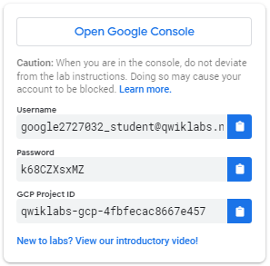

Kubernetes Engine: Qwik Start
GSP100
Overview
Google Kubernetes Engine (GKE) provides a managed environment for deploying, managing, and scaling your containerized applications using Google infrastructure. The Kubernetes Engine environment consists of multiple machines (specifically Google Compute Engine instances) grouped together to form a container cluster. In this lab, you will get hands on practice with container creation and application deployment with GKE.
Cluster orchestration with Kubernetes Engine
Kubernetes Engine clusters are powered by the Kubernetes open source cluster management system. Kubernetes provides the mechanisms through which you interact with your container cluster. You use Kubernetes commands and resources to deploy and manage your applications, perform administration tasks and set policies, and monitor the health of your deployed workloads.
Kubernetes draws on the same design principles that run popular Google services and provides the same benefits: automatic management, monitoring and liveness probes for application containers, automatic scaling, rolling updates, and more. When you run your applications on a container cluster, you're using technology based on Google's 10+ years of experience running production workloads in containers.
Kubernetes on Google Cloud Platform
When you run a Kubernetes Engine cluster, you also gain the benefit of advanced cluster management features that Google Cloud Platform provides. These include:
- Load-balancing for Compute Engine instances.
- Node Pools to designate subsets of nodes within a cluster for additional flexibility.
- Automatic scaling of your cluster's node instance count.
- Automatic upgrades for your cluster's node software.
- Node auto-repair to maintain node health and availability.
- Logging and Monitoring with Stackdriver for visibility into your cluster.
Now that you have a basic understanding of Kubernetes, you will learn how to deploy a containerized application with Kubernetes Engine in less than 30 minutes. Scroll down and follow the steps below to get your lab environment set up.
Setup and Requirements
Qwiklabs setup
Before you click the Start Lab button
Read these instructions. Labs are timed and you cannot pause them. The timer, which starts when you click Start Lab, shows how long Cloud resources will be made available to you.
This Qwiklabs hands-on lab lets you do the lab activities yourself in a real cloud environment, not in a simulation or demo environment. It does so by giving you new, temporary credentials that you use to sign in and access the Google Cloud Platform for the duration of the lab.
What you need
To complete this lab, you need:
- Access to a standard internet browser (Chrome browser recommended).
- Time to complete the lab.
Note: If you already have your own personal GCP account or project, do not use it for this lab.
Google Cloud Platform Console
How to start your lab and sign in to the Console
-
Click the Start Lab button. If you need to pay for the lab, a pop-up opens for you to select your payment method. On the left is a panel populated with the temporary credentials that you must use for this lab.

-
Copy the username, and then click Open Google Console. The lab spins up resources, and then opens another tab that shows the Choose an account page.
Tip: Open the tabs in separate windows, side-by-side.
-
On the Choose an account page, click Use Another Account.
-
The Sign in page opens. Paste the username that you copied from the Connection Details panel. Then copy and paste the password.
Important: You must use the credentials from the Connection Details panel. Do not use your Qwiklabs credentials. If you have your own GCP account, do not use it for this lab (avoids incurring charges).
-
Click through the subsequent pages:
- Accept the terms and conditions.
- Do not add recovery options or two-factor authentication (because this is a temporary account).
- Do not sign up for free trials.
After a few moments, the GCP console opens in this tab.
Activate Google Cloud Shell
Google Cloud Shell is a virtual machine that is loaded with development tools. It offers a persistent 5GB home directory and runs on the Google Cloud. Google Cloud Shell provides command-line access to your GCP resources.
-
In GCP console, on the top right toolbar, click the Open Cloud Shell button.
-
In the dialog box that opens, click START CLOUD SHELL:
It takes a few moments to provision and connect to the environment. When you are connected, you are already authenticated, and the project is set to your PROJECT_ID. For example:
gcloud is the command-line tool for Google Cloud Platform. It comes pre-installed on Cloud Shell and supports tab-completion.
You can list the active account name with this command:
gcloud auth list
Output:
Credentialed accounts:
- <myaccount>@<mydomain>.com (active)Example output:
Credentialed accounts:
- google1623327_student@qwiklabs.netYou can list the project ID with this command:
gcloud config list project
Output:
[core]
project = <project_ID>Example output:
[core]
project = qwiklabs-gcp-44776a13dea667a6Setting a default compute zone
Your compute zone is an approximate regional location in which your clusters and their resources live. For example, us-central1-a is a zone in the us-central1 region.
Start a new session in Cloud Shell and run the following command to set your default compute zone to us-central1-a:
gcloud config set compute/zone us-central1-a
You will receive the following output:
Updated property [compute/zone].Creating a Kubernetes Engine cluster
A cluster consists of at least one cluster master machine and multiple worker machines called nodes. Nodes are Compute Engine virtual machine (VM) instances that run the Kubernetes processes necessary to make them part of the cluster.
To create a cluster, run the following command, replacing [CLUSTER-NAME] with the name you choose for the cluster (for example my-cluster). Cluster names must start with a letter, end with an alphanumeric, and cannot be longer than 40 characters.
gcloud container clusters create [CLUSTER-NAME]
You can ignore any warnings in the output. It might take several minutes to finish creating the cluster. Soon after you should receive a similar output:
NAME LOCATION ... NODE_VERSION NUM_NODES STATUS
my-cluster us-central1-a ... 1.10.9-gke.5 3 RUNNINGClick Check my progress to verify the objective.
Get authentication credentials for the cluster
After creating your cluster, you need to get authentication credentials to interact with the cluster.
To authenticate the cluster run the following command, replacing [CLUSTER-NAME] with the name of your cluster:
gcloud container clusters get-credentials [CLUSTER-NAME]
You should receive a similar output:
Fetching cluster endpoint and auth data.
kubeconfig entry generated for my-cluster.Deploying an application to the cluster
Now that you have created a cluster, you can deploy a containerized application to it. For this lab you'll run hello-app in your cluster.
Kubernetes Engine uses Kubernetes objects to create and manage your cluster's resources. Kubernetes provides the Deployment object for deploying stateless applications like web servers. Service objects define rules and load balancing for accessing your application from the Internet.
Run the following kubectl run command in Cloud Shell to create a new Deployment hello-server from the hello-app container image:
kubectl run hello-server --image=gcr.io/google-samples/hello-app:1.0 --port 8080
You should receive the following output:
deployment.apps "hello-server" createdThis Kubernetes command creates a Deployment object that represents hello-app. In this command:
-
--imagespecifies a container image to deploy. In this case, the command pulls the example image from a Google Container Registry bucket.gcr.io/google-samples/hello-app:1.0indicates the specific image version to pull. If a version is not specified, the latest version is used. -
--portspecifies the port that the container exposes.
Now create a Kubernetes Service, which is a Kubernetes resource that lets you expose your application to external traffic, by running the following kubectl expose command:
kubectl expose deployment hello-server --type="LoadBalancer"
You should receive the following output:
service "hello-server" exposedClick Check my progress to verify the objective.
Passing in type="LoadBalancer" creates a Compute Engine load balancer for your container.
Inspect the hello-server Service by running kubectl get:
kubectl get service hello-server
You should receive a similar output:
NAME TYPE ... EXTERNAL-IP PORT(S) AGE
hello-server LoadBalancer ... 35.184.112.169 8080:30840/TCP 2mFrom this command's output, copy the Service's external IP address from the EXTERNAL IP column.
View the application from your web browser using the external IP address with the exposed port:
http://[EXTERNAL-IP]:8080
Your page should resemble the following:
Click Check my progress to verify the objective.
Clean Up
Run the following to delete the cluster:
gcloud container clusters delete [CLUSTER-NAME]
When prompted, type Y to confirm. Deleting the cluster can take a few minutes. For more information on deleted Google Kubernetes Engine clusters, view the documentation.
Click Check my progress to verify the objective.
Congratulations!
You have just deployed a containerized application to Kubernetes Engine!
Finish Your Quest
Continue your Baseline: Infrastructure, GCP Essentials, or VM Migration Quest. A Quest is a series of related labs that form a learning path. Completing this Quest earns you the badge above, to recognize your achievement. You can make your badge (or badges) public and link to them in your online resume or social media account. Enroll in a Quest and get immediate completion credit if you've taken this lab. See other available Qwiklabs Quests.
Next Steps / Learn More
This lab is part of a series of labs called Qwik Starts. These labs are designed to give you a little taste of the many features available with Google Cloud. Search for "Qwik Starts" in the lab catalog to find the next lab you'd like to take!
Google Cloud Training & Certification
...helps you make the most of Google Cloud technologies. Our classes include technical skills and best practices to help you get up to speed quickly and continue your learning journey. We offer fundamental to advanced level training, with on-demand, live, and virtual options to suit your busy schedule. Certifications help you validate and prove your skill and expertise in Google Cloud technologies.
Manual Last Updated August 5, 2019
Lab Last Tested August 5, 2019
Copyright 2019 Google LLC All rights reserved. Google and the Google logo are trademarks of Google LLC. All other company and product names may be trademarks of the respective companies with which they are associated.
Score
—/100
Creating a Kubernetes Engine cluster
/ 25
Create a new Deployment - hello-server
/ 25
Create a Kubernetes Service
/ 25
Clean up: Delete the cluster
/ 25